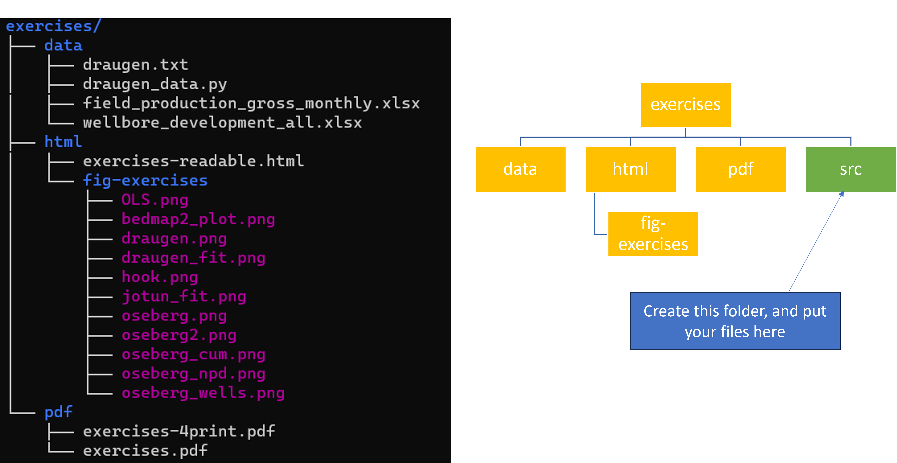

University of Stavanger, Institute for Energy Resources, Norway
Exercise 1: Install Bedmap to visualize Antarctica ice data
Exercise 2: Matplotlib visualization
Exercise 4: Read tabulated data from file
Solution 2 numpy.loadtxt (medium):
Solution 3 Vanilla Python (hard):
Exercise 5: Splitting data into files using Pandas
Exercise 6: Splitting all field data into separate files
Exercise 7: Splitting field data into separate files and folder
Exercise 8: Create a function for extracting data
Exercise 9: Improve the previous function
Exercise 10: More improvements
Learning objectives.
In some of these exercises we are going to work with files and folders. It is very important to not spread files and folders everywhere on the computer. My suggestion would be to create a new folder inside the exercise folder called src, src is used to indicate source code, as illustrated in figure 1.
Figure 1: Folder tree structure.

If you have a Python file inside the src folder and wants to access e.g. an Excel file in the data folder, we do that by using relative paths. A double dot .. is to step up relative to where you are standing, a slash / followed by a name indicates a directory or file, e.g. the draugen.txt file can be accessed from the src directory by ../data/draugen.txt. You can also use the Pathlib library to check if everything went ok
import pathlib as pt
p=pt.Path('../data/draugen.txt')
print(p.exists()) # will print True if yes